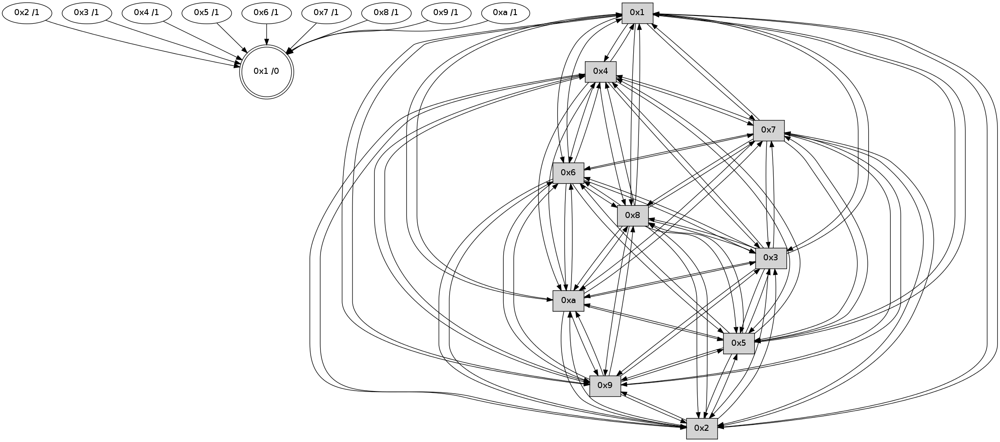

>> << IDX [start] -100 -25 -5 +0 +5 +25 +100 [465.425836086]
 Previous packets
460.010396 [Hello(10): seq=229 sym=6,3,2,8,9,5,7,4,1 sysInfo= stat=6:9,0,1,0/3:13,0,1,0/2:5,0,0,0/8:3,0,1,0/9:12,0,1,0/5:1,0,1,0/7:15,0,1,0/4:12,0,0,0/1:13,0,1,0]
460.013085 [Hello(5): seq=297 sym=7,6,4,3,1,9,8,10,2 sysInfo= stat=7:15,0,1,0/6:3,0,1,0/4:12,0,0,0/3:6,0,0,0/1:11,0,1,0/9:15,0,1,0/8:4,0,1,0/10:11,0,0,0/2:15,0,0,0]
460.016546 [Hello(4): seq=297 sym=5,7,6,2,3,9,8,10,1 sysInfo= stat=5:9,0,1,0/7:2,0,1,0/6:7,0,1,0/2:12,0,0,0/3:3,0,1,0/9:13,0,1,0/8:8,0,1,0/10:6,0,0,0/1:10,0,1,0]
460.019549 [Hello(9): seq=240 sym=5,2,3,4,7,6,8,10,1 sysInfo= stat=5:1,0,0,0/2:9,0,0,0/3:7,0,0,0/4:5,0,0,0/7:5,0,1,0/6:15,0,1,0/8:6,0,1,0/10:15,0,0,0/1:3,0,1,0]
460.025507 [Hello(2): seq=294 sym=4,5,7,6,3,9,8,10,1 sysInfo= stat=4:5,0,0,0/5:3,0,1,0/7:14,0,1,0/6:3,0,1,0/3:0,0,1,0/9:10,0,1,0/8:15,0,1,0/10:2,0,0,0/1:8,0,1,0]
460.033619 [Hello(8): seq=240 sym=5,2,3,7,6,9,10,1 sysInfo= stat=5:15,0,0,0/2:7,0,0,0/3:6,0,0,0/7:3,0,1,0/6:11,0,1,0/9:0,0,0,0/10:14,0,0,0/1:3,0,1,0]
----------------------------------------------------------------------
460.697044 beacon01(faad) #0 coord=01,02,03,04,05,06,07,0a,09,08 cycle=688.0ms assoc
-- color-indic=0 64 a5 96
460.707027 beacon02(faad) #0 coord=01,02,03,04,05,06,07,0a,09,08 cycle=688.0ms assoc 64 36 a7
460.717027 beacon03(faad) #0 coord=01,02,03,04,05,06,07,0a,09,08 cycle=688.0ms assoc 64 4c ea
460.727027 beacon04(faad) #0 coord=01,02,03,04,05,06,07,0a,09,08 cycle=688.0ms assoc 64 3b 00
460.737028 beacon05(faad) #0 coord=01,02,03,04,05,06,07,0a,09,08 cycle=688.0ms assoc 64 41 4d
460.747027 beacon06(faad) #0 coord=01,02,03,04,05,06,07,0a,09,08 cycle=688.0ms assoc 64 cf 9a
460.767032 beacon0a(faad) #0 coord=01,02,03,04,05,06,07,0a,09,08 cycle=688.0ms assoc 64 c4 dc
460.777031 beacon09(faad) #0 coord=01,02,03,04,05,06,07,0a,09,08 cycle=688.0ms assoc 64 4a 0b
460.787033 beacon08(faad) #0 coord=01,02,03,04,05,06,07,0a,09,08 cycle=688.0ms assoc 64 30 46
460.797908 [Hello(1): seq=206 sym=4,2,9,5,10,3,8,6,7 sysInfo= stat=4:0,0,0,0/2:9,0,0,0/9:9,0,1,0/5:5,0,1,0/10:8,0,0,0/3:13,0,1,0/8:9,0,1,0/6:0,0,1,0/7:6,0,1,0]
460.802173 [Hello(7): seq=297 sym=2,3,5,6,4,8,9,10,1 sysInfo= stat=2:2,0,1,0/3:14,0,0,0/5:2,0,0,0/6:10,0,1,0/4:12,0,0,0/8:5,0,0,0/9:3,0,0,0/10:13,0,0,0/1:11,0,1,0]
460.806773 [Hello(6): seq=297 sym=2,3,5,4,7,9,8,10,1 sysInfo= stat=2:0,0,1,0/3:3,0,0,0/5:11,0,0,0/4:4,0,0,0/7:4,0,0,0/9:7,0,0,0/8:1,0,0,0/10:14,0,0,0/1:9,0,1,0]
----------------------------------------------------------------------
461.485176 beacon01(faad) #0 coord=01,02,03,04,05,06,07,0a,09,08 cycle=688.0ms assoc
-- color-indic=0 64 19 93
461.495159 beacon02(faad) #0 coord=01,02,03,04,05,06,07,0a,09,08 cycle=688.0ms assoc 64 8a a2
461.505157 beacon03(faad) #0 coord=01,02,03,04,05,06,07,0a,09,08 cycle=688.0ms assoc 64 f0 ef
461.515159 beacon04(faad) #0 coord=01,02,03,04,05,06,07,0a,09,08 cycle=688.0ms assoc 64 87 05
461.525159 beacon05(faad) #0 coord=01,02,03,04,05,06,07,0a,09,08 cycle=688.0ms assoc 64 fd 48
461.535158 beacon06(faad) #0 coord=01,02,03,04,05,06,07,0a,09,08 cycle=688.0ms assoc 64 73 9f
461.545159 beacon07(faad) #0 coord=01,02,03,04,05,06,07,0a,09,08 cycle=688.0ms assoc 64 09 d2
461.555165 beacon0a(faad) #0 coord=01,02,03,04,05,06,07,0a,09,08 cycle=688.0ms assoc 64 78 d9
461.565164 beacon09(faad) #0 coord=01,02,03,04,05,06,07,0a,09,08 cycle=688.0ms assoc 64 f6 0e
461.575164 beacon08(faad) #0 coord=01,02,03,04,05,06,07,0a,09,08 cycle=688.0ms assoc 64 8c 43
461.586323 [Hello(10): seq=230 sym=6,3,2,8,9,5,7,4,1 sysInfo= stat=6:10,0,1,0/3:13,0,1,0/2:6,0,0,0/8:4,0,1,0/9:13,0,1,0/5:2,0,1,0/7:0,0,1,0/4:13,0,0,0/1:14,0,1,0]
461.590308 [Hello(2): seq=295 sym=4,5,7,6,3,9,8,10,1 sysInfo= stat=4:5,0,0,0/5:3,0,1,0/7:15,0,1,0/6:4,0,1,0/3:0,0,1,0/9:10,0,1,0/8:0,0,1,0/10:2,0,0,0/1:9,0,1,0]
461.593158 [Hello(8): seq=241 sym=5,2,3,7,6,9,10,1 sysInfo= stat=5:15,0,0,0/2:7,0,0,0/3:6,0,0,0/7:4,0,1,0/6:12,0,1,0/9:0,0,0,0/10:14,0,0,0/1:4,0,1,0]
461.598249 [Hello(3): seq=298 sym=1,7,6,2,4,8,9,10,5 sysInfo= stat=1:5,0,1,0/7:9,0,1,0/6:6,0,1,0/2:15,0,0,0/4:2,0,0,0/8:15,0,1,0/9:9,0,1,0/10:2,0,0,0/5:2,0,1,0]
461.603517 [Hello(5): seq=298 sym=7,6,4,3,1,9,8,10,2 sysInfo= stat=7:0,0,1,0/6:4,0,1,0/4:13,0,0,0/3:6,0,0,0/1:12,0,1,0/9:0,0,1,0/8:5,0,1,0/10:11,0,0,0/2:0,0,0,0]
461.607024 [Hello(4): seq=298 sym=5,7,6,2,3,9,8,10,1 sysInfo= stat=5:9,0,1,0/7:3,0,1,0/6:8,0,1,0/2:13,0,0,0/3:3,0,1,0/9:14,0,1,0/8:9,0,1,0/10:6,0,0,0/1:11,0,1,0]
----------------------------------------------------------------------
462.273307 beacon01(faad) #0 coord=01,02,03,04,05,06,07,0a,09,08 cycle=688.0ms assoc
-- color-indic=0 64 2d 8b
462.283289 beacon02(faad) #0 coord=01,02,03,04,05,06,07,0a,09,08 cycle=688.0ms assoc 64 be ba
462.293289 beacon03(faad) #0 coord=01,02,03,04,05,06,07,0a,09,08 cycle=688.0ms assoc 64 c4 f7
462.303290 beacon04(faad) #0 coord=01,02,03,04,05,06,07,0a,09,08 cycle=688.0ms assoc 64 b3 1d
462.313290 beacon05(faad) #0 coord=01,02,03,04,05,06,07,0a,09,08 cycle=688.0ms assoc 64 c9 50
462.323289 beacon06(faad) #0 coord=01,02,03,04,05,06,07,0a,09,08 cycle=688.0ms assoc 64 47 87
462.333291 beacon07(faad) #0 coord=01,02,03,04,05,06,07,0a,09,08 cycle=688.0ms assoc 64 3d ca
462.343296 beacon0a(faad) #0 coord=01,02,03,04,05,06,07,0a,09,08 cycle=688.0ms assoc 64 4c c1
462.353295 beacon09(faad) #0 coord=01,02,03,04,05,06,07,0a,09,08 cycle=688.0ms assoc 64 c2 16
462.363295 beacon08(faad) #0 coord=01,02,03,04,05,06,07,0a,09,08 cycle=688.0ms assoc 64 b8 5b
462.374751 [Hello(1): seq=207 sym=4,2,9,5,10,3,8,6,7 sysInfo= stat=4:1,0,0,0/2:10,0,0,0/9:9,0,1,0/5:6,0,1,0/10:9,0,0,0/3:14,0,1,0/8:10,0,1,0/6:1,0,1,0/7:7,0,1,0]
462.377894 [STC(1) #0.2 to-color d=0]
462.379721 [Hello(6): seq=298 sym=2,3,5,4,7,9,8,10,1 sysInfo= stat=2:1,0,1,0/3:4,0,0,0/5:12,0,0,0/4:5,0,0,0/7:4,0,0,0/9:7,0,0,0/8:2,0,0,0/10:15,0,0,0/1:9,0,1,0]
462.383671 [Hello(7): seq=298 sym=2,3,5,6,4,8,9,10,1 sysInfo= stat=2:3,0,1,0/3:15,0,0,0/5:3,0,0,0/6:11,0,1,0/4:13,0,0,0/8:6,0,0,0/9:3,0,0,0/10:14,0,0,0/1:11,0,1,0]
----------------------------------------------------------------------
463.061437 beacon01(faad) #0 coord=01,02,03,04,05,06,07,0a,09,08 cycle=688.0ms assoc
-- color-indic=0 64 91 8e
463.071420 beacon02(faad) #0 coord=01,02,03,04,05,06,07,0a,09,08 cycle=688.0ms assoc 64 02 bf
463.081422 beacon03(faad) #0 coord=01,02,03,04,05,06,07,0a,09,08 cycle=688.0ms assoc 64 78 f2
463.091422 beacon04(faad) #0 coord=01,02,03,04,05,06,07,0a,09,08 cycle=688.0ms assoc 64 0f 18
463.101421 beacon05(faad) #0 coord=01,02,03,04,05,06,07,0a,09,08 cycle=688.0ms assoc 64 75 55
463.111421 beacon06(faad) #0 coord=01,02,03,04,05,06,07,0a,09,08 cycle=688.0ms assoc 64 fb 82
463.121421 beacon07(faad) #0 coord=01,02,03,04,05,06,07,0a,09,08 cycle=688.0ms assoc 64 81 cf
463.131425 beacon0a(faad) #0 coord=01,02,03,04,05,06,07,0a,09,08 cycle=688.0ms assoc 64 f0 c4
463.141426 beacon09(faad) #0 coord=01,02,03,04,05,06,07,0a,09,08 cycle=688.0ms assoc 64 7e 13
463.151425 beacon08(faad) #0 coord=01,02,03,04,05,06,07,0a,09,08 cycle=688.0ms assoc 64 04 5e
463.162820 [Hello(3): seq=299 sym=1,7,6,2,4,8,9,10,5 sysInfo= stat=1:6,0,2,0/7:10,0,1,0/6:7,0,1,0/2:15,0,0,0/4:3,0,0,0/8:15,0,1,0/9:9,0,1,0/10:2,0,0,0/5:3,0,1,0]
463.165666 [STC(3)->1 #0.2 to-color d=1]
463.167429 [Hello(10): seq=231 sym=6,3,2,8,9,5,7,4,1 sysInfo= stat=6:11,0,1,0/3:14,0,1,0/2:7,0,0,0/8:5,0,1,0/9:13,0,1,0/5:3,0,1,0/7:1,0,1,0/4:14,0,0,0/1:15,0,2,0]
463.170091 [Hello(2): seq=296 sym=4,5,7,6,3,9,8,10,1 sysInfo= stat=4:6,0,0,0/5:4,0,1,0/7:0,0,1,0/6:5,0,1,0/3:1,0,1,0/9:10,0,1,0/8:1,0,1,0/10:2,0,0,0/1:10,0,2,0]
463.172683 [Hello(9): seq=242 sym=5,2,3,4,7,6,8,10,1 sysInfo= stat=5:2,0,0,0/2:11,0,0,0/3:8,0,0,0/4:6,0,0,0/7:7,0,1,0/6:1,0,1,0/8:8,0,1,0/10:15,0,0,0/1:5,0,2,0]
463.176260 [STC(2)->1 #0.2 to-color d=1]
463.177861 [STC(10)->1 #0.2 to-color d=1]
463.179548 [Hello(5): seq=299 sym=7,6,4,3,1,9,8,10,2 sysInfo= stat=7:1,0,1,0/6:5,0,1,0/4:14,0,0,0/3:6,0,0,0/1:13,0,2,0/9:0,0,1,0/8:5,0,1,0/10:11,0,0,0/2:0,0,0,0]
463.184044 [Hello(4): seq=299 sym=5,7,6,2,3,9,8,10,1 sysInfo= stat=5:9,0,1,0/7:4,0,1,0/6:9,0,1,0/2:13,0,0,0/3:3,0,1,0/9:14,0,1,0/8:9,0,1,0/10:6,0,0,0/1:12,0,2,0]
463.186587 [Hello(8): seq=242 sym=5,2,3,4,7,6,9,10,1 sysInfo= stat=5:0,0,0,0/2:7,0,0,0/3:7,0,0,0/4:0,0,0,0/7:5,0,1,0/6:13,0,1,0/9:0,0,0,0/10:14,0,0,0/1:5,0,2,0]
463.189559 [STC(4)->1 #0.2 to-color d=1]
463.191925 [STC(8)->1 #0.2 to-color d=1]
463.194780 [STC(5)->1 #0.2 to-color d=1]
463.197994 [STC(9)->1 #0.2 to-color d=1]
----------------------------------------------------------------------
463.849570 beacon01(faad) #0 coord=01,02,03,04,05,06,07,0a,09,08 cycle=688.0ms assoc
-- color-indic=0 64 55 80
463.859551 beacon02(faad) #0 coord=01,02,03,04,05,06,07,0a,09,08 cycle=688.0ms assoc 64 c6 b1
463.869554 beacon03(faad) #0 coord=01,02,03,04,05,06,07,0a,09,08 cycle=688.0ms assoc 64 bc fc
463.879553 beacon04(faad) #0 coord=01,02,03,04,05,06,07,0a,09,08 cycle=688.0ms assoc 64 cb 16
463.889554 beacon05(faad) #0 coord=01,02,03,04,05,06,07,0a,09,08 cycle=688.0ms assoc 64 b1 5b
463.899553 beacon06(faad) #0 coord=01,02,03,04,05,06,07,0a,09,08 cycle=688.0ms assoc 64 3f 8c
463.909553 beacon07(faad) #0 coord=01,02,03,04,05,06,07,0a,09,08 cycle=688.0ms assoc 64 45 c1
463.919557 beacon0a(faad) #0 coord=01,02,03,04,05,06,07,0a,09,08 cycle=688.0ms assoc 64 34 ca
463.929559 beacon09(faad) #0 coord=01,02,03,04,05,06,07,0a,09,08 cycle=688.0ms assoc 64 ba 1d
463.939559 beacon08(faad) #0 coord=01,02,03,04,05,06,07,0a,09,08 cycle=688.0ms assoc 64 c0 50
463.950440 [Hello(1): seq=208 sym=4,2,9,5,10,3,8,6,7 sysInfo= stat=4:2,0,1,0/2:11,0,1,0/9:10,0,2,0/5:7,0,2,0/10:10,0,1,0/3:15,0,2,0/8:11,0,2,0/6:2,0,1,0/7:8,0,1,0]
463.956284 [Hello(7): seq=299 sym=2,3,5,6,4,8,9,10,1 sysInfo= stat=2:4,0,2,0/3:0,0,1,0/5:4,0,1,0/6:11,0,1,0/4:14,0,1,0/8:7,0,1,0/9:4,0,1,0/10:15,0,1,0/1:11,0,1,0]
463.963915 [Hello(6): seq=299 sym=2,3,5,4,7,9,8,10,1 sysInfo= stat=2:2,0,2,0/3:5,0,1,0/5:13,0,1,0/4:6,0,1,0/7:5,0,0,0/9:8,0,1,0/8:3,0,1,0/10:0,0,1,0/1:9,0,1,0]
----------------------------------------------------------------------
464.637704 beacon01(faad) #0 coord=01,02,03,04,05,06,07,0a,09,08 cycle=688.0ms assoc
-- color-indic=0 64 e9 85
464.647687 beacon02(faad) #0 coord=01,02,03,04,05,06,07,0a,09,08 cycle=688.0ms assoc 64 7a b4
464.657687 beacon03(faad) #0 coord=01,02,03,04,05,06,07,0a,09,08 cycle=688.0ms assoc 64 00 f9
464.667687 beacon04(faad) #0 coord=01,02,03,04,05,06,07,0a,09,08 cycle=688.0ms assoc 64 77 13
464.677687 beacon05(faad) #0 coord=01,02,03,04,05,06,07,0a,09,08 cycle=688.0ms assoc 64 0d 5e
464.687688 beacon06(faad) #0 coord=01,02,03,04,05,06,07,0a,09,08 cycle=688.0ms assoc 64 83 89
464.697688 beacon07(faad) #0 coord=01,02,03,04,05,06,07,0a,09,08 cycle=688.0ms assoc 64 f9 c4
464.707691 beacon0a(faad) #0 coord=01,02,03,04,05,06,07,0a,09,08 cycle=688.0ms assoc 64 88 cf
464.727692 beacon08(faad) #0 coord=01,02,03,04,05,06,07,0a,09,08 cycle=688.0ms assoc 64 7c 55
464.743479 [Hello(2): seq=297 sym=4,5,7,6,3,9,8,10,1 sysInfo= stat=4:7,0,1,0/5:5,0,2,0/7:1,0,1,0/6:6,0,1,0/3:1,0,1,0/9:10,0,2,0/8:2,0,2,0/10:2,0,1,0/1:11,0,2,0]
464.747137 [Hello(3): seq=300 sym=1,7,6,2,4,8,9,10,5 sysInfo= stat=1:7,0,2,0/7:11,0,1,0/6:8,0,1,0/2:0,0,1,0/4:4,0,1,0/8:0,0,2,0/9:10,0,2,0/10:3,0,1,0/5:4,0,2,0]
464.754294 [Hello(10): seq=232 sym=6,3,2,8,9,5,7,4,1 sysInfo= stat=6:12,0,1,0/3:14,0,1,0/2:7,0,0,0/8:6,0,2,0/9:13,0,2,0/5:4,0,2,0/7:2,0,1,0/4:15,0,1,0/1:0,0,2,0]